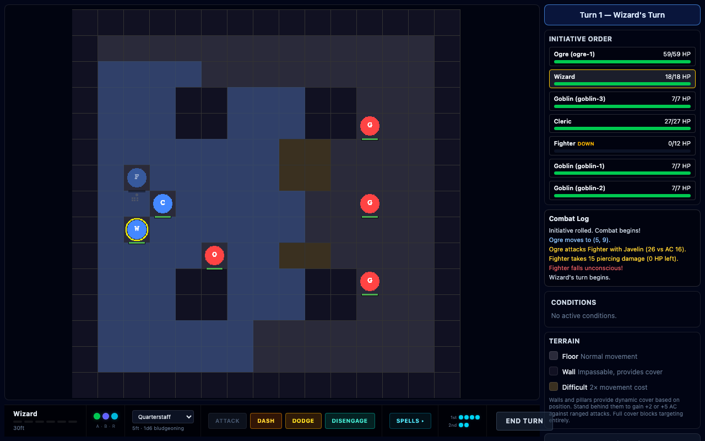
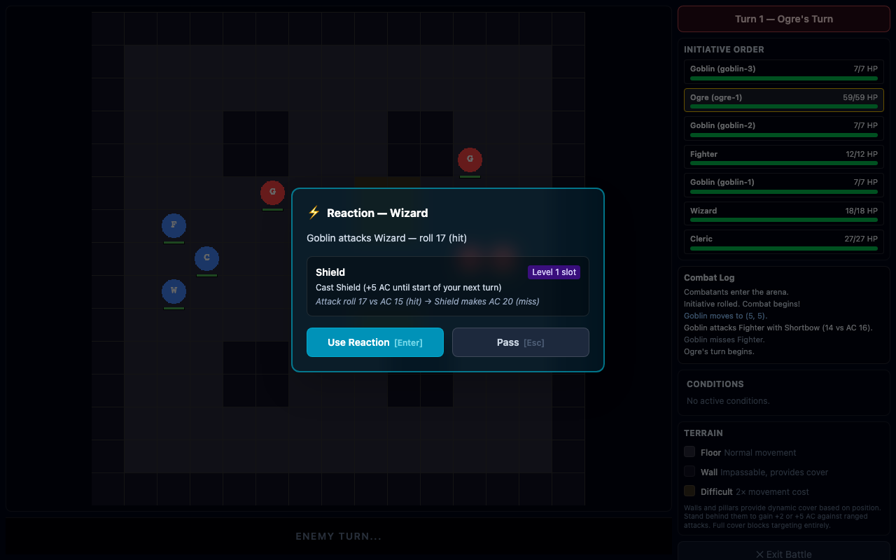
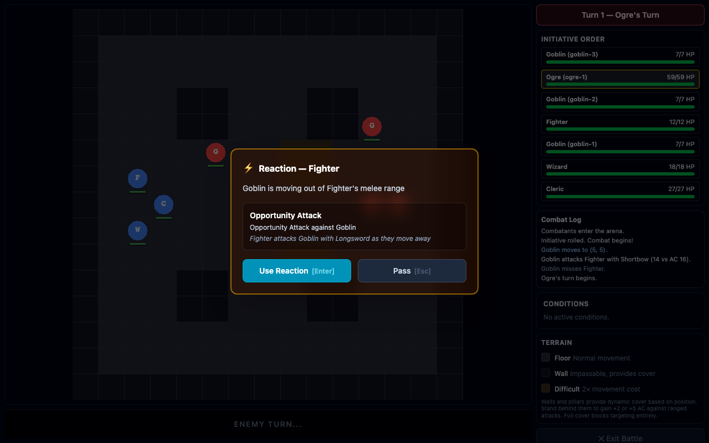
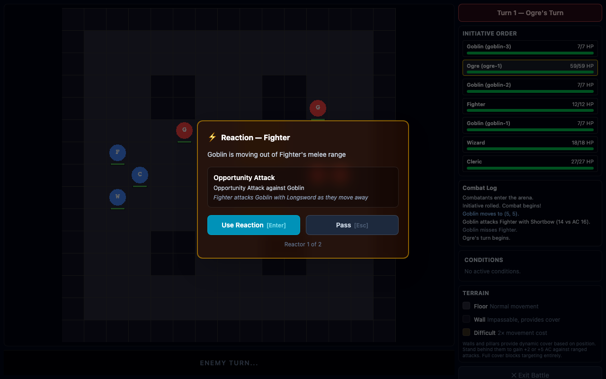
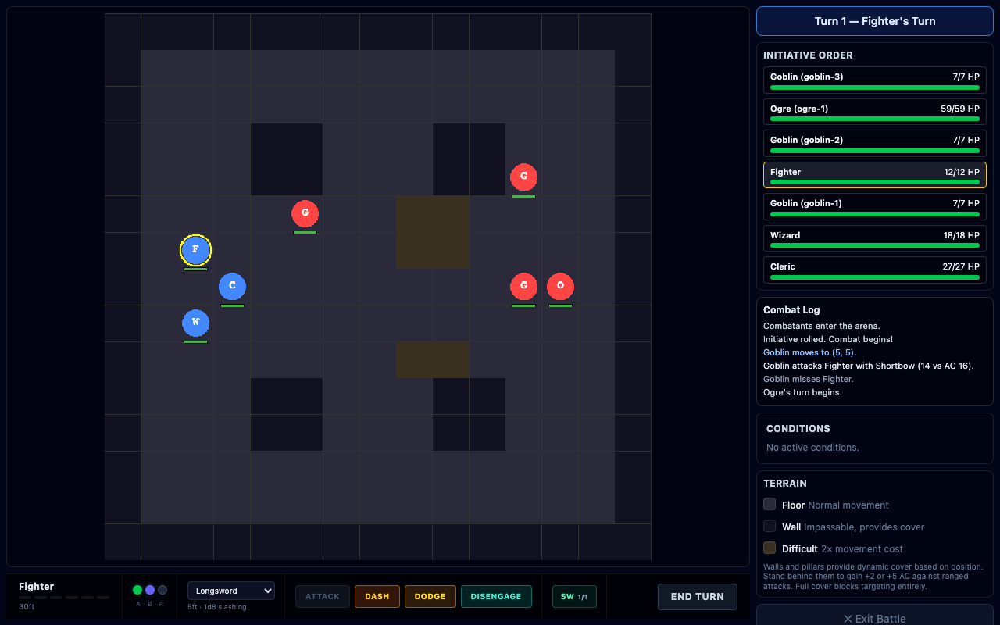

Feature branch: feat/reaction-system | Closes #13, #24, #26, #27
Full walkthrough: scenario start, Shield prompt, OA prompt, batched multi-OA, and action economy tooltips.
Party Tactics scenario — Fighter, Wizard, and Cleric vs Ogre + 3 Goblins on the arena grid.

When an enemy attack hits the Wizard, combat pauses and a Shield prompt appears. Shows attack roll vs AC math, spell slot cost, and Use/Pass buttons with keyboard shortcuts (Enter/Escape). Reaction is consumed on use, preventing double-casting.

When an enemy moves out of a party member's melee range, an OA prompt appears. The player can take the attack (consuming their reaction) or pass (keeping it for later).

When an enemy triggers OAs from multiple party members, all are collected and prompted sequentially. Note "Reactor 1 of 2" at the bottom. Previously only the first was prompted, and passing caused an infinite loop.

Action/Bonus/Reaction dots in the HUD show used/ready state. Hover (desktop) or tap (mobile) reveals a tooltip explaining what each action type is used for.
